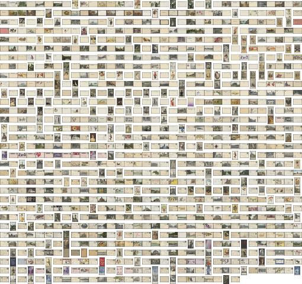

Browse the items of the collection.
Many people viewed master needleworker Barnett A. Hook of rural McArthur, Ohio as a curiosity during his lifetime—in fact, he sometimes made his living highlighting his status as one of "only four men in the United States who teach embroidery." Today, Hook is mostly remembered for his local celebrity in the field of "art needlework," but he tried his hand at more than a dozen careers during the 19th and early 20th centuries, starting with a stint as a teenaged Civil War soldier. Later professions included high school teacher, newspaper editor, political candidate, hotel clerk, stablemaster, cater, entertainer, decorator, and nurse.
In 2017, Ohio University Libraries elected to digitize the needlework pieces attributed to Hook that survive in the Mahn Center for Archives and Special Collections' Barnett Hook collection. In addition to Hook’s artistic oeuvre, the Libraries also decided to make available several hundred documents, photographs, and postcards that give context to his life and work. It is worth noting that despite being regarded as a character outside the norm, Hook remains very much a product of his time and place. These materials tell a story of small town social networks and community bonds as well as money troubles, mysogyny, and racism. We present these materials faithfully and fully to encourage research into the historical attitudes and prejudices they reflect.
This collection contains many color postcards.
This collection is mostly from the first decade of the 20th century.
This collection is mostly postcards, photographs and images of needlework.
This collection contains many photographs of the Midwest and South of the United States.
This collection's metadata is freely avalible as VRA Core XML files. VRA Core is a standard way to record information specific to visual resources designed by specialist librarians.